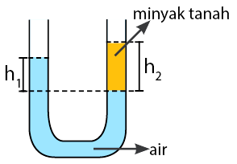

sebuah pipa U (bejana berhubungan yang memiliki dua tabung) diisi dengan minyak dan air, maka tinggi permukaan yang dimiliki air akan berbeda, seperti pada gambar berikut.
Fenomena ini terjadi karena perbedaan massa jenis antara minyak dan air. Ketika dua cairan dengan massa jenis yang berbeda ditempatkan dalam pipa U yang terhubung, ketinggian permukaan cairan tersebut akan berbeda dalam pipa-pipa yang berbeda. pada pipa U, tekanan di kedua ujung pipa akan sama karena kedua ujung pipa terhubung. Namun, karena minyak memiliki densitas yang lebih rendah, tekanan yang dihasilkan oleh kolom minyak yang lebih tinggi akan menyebabkan tingginya permukaan air di sisi minyak lebih rendah. Sehingga, didapat persamaan berikut \[P_{h1} = P_{h2} \] \[{\rho g h_1 = \rho g h_2 }\]